原156＋真实事件50，共206场，0拟合。固定DINOv2视觉表征和真实双类局地参照形成对象距离比；只仲裁COMPACT新增扣量。六个继承固定检查加大庆/阳泉固定夏季定位场。每场各法同RAW色限、同原支持。
结果与局限 · 冻结机制 · 必要指标 · 固定位置与极值结果
末列只显示本日有支持的COMPACT对象权重；灰色代表本支无权重，不是完整材料概率图。定位点无支持时按原合同保留TENSOR。
原30新增扣量均值 0.7021、地图交格恢复 23.64%，均不及VISIBLE/FOREST/BOUNDED。450原双类目标格回退TENSOR；当前保留并列，展示真实负结果。
旧GRAPH剩余新增扣量 0.828 → DINO上下文 0.934 μg/m³；实际PM变化 -0.106。
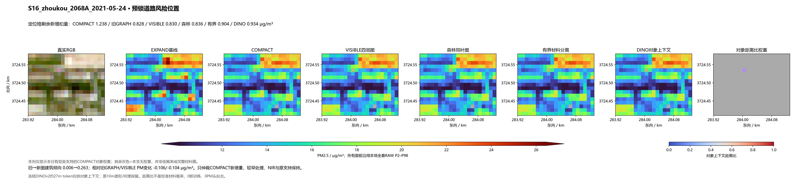
旧GRAPH剩余新增扣量 0.137 → DINO上下文 0.119 μg/m³；实际PM变化 +0.018。
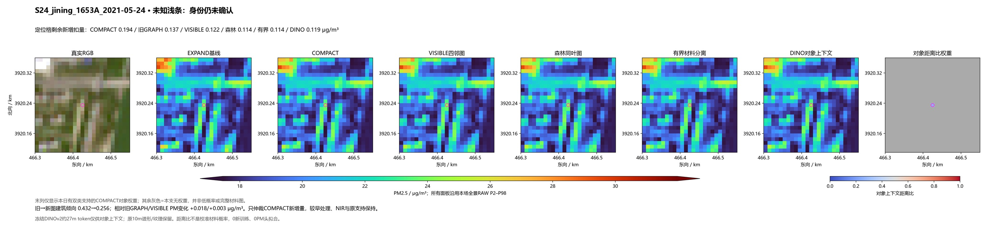
旧GRAPH剩余新增扣量 1.505 → DINO上下文 1.309 μg/m³；实际PM变化 +0.196。
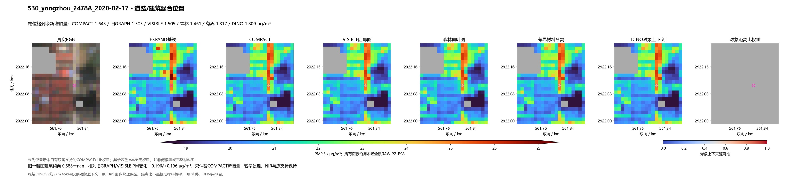
旧GRAPH剩余新增扣量 0.674 → DINO上下文 0.811 μg/m³；实际PM变化 -0.137。
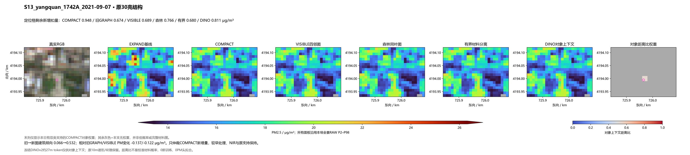
旧GRAPH剩余新增扣量 0.612 → DINO上下文 0.478 μg/m³；实际PM变化 +0.135。
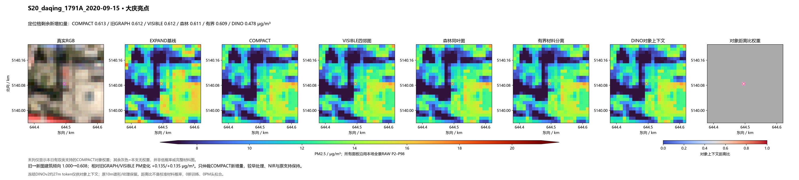
旧GRAPH剩余新增扣量 0.245 → DINO上下文 0.303 μg/m³；实际PM变化 -0.059。
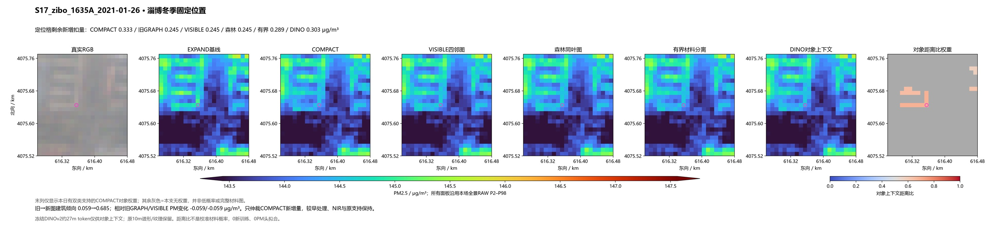
旧GRAPH剩余新增扣量 0.422 → DINO上下文 0.563 μg/m³；实际PM变化 -0.141。
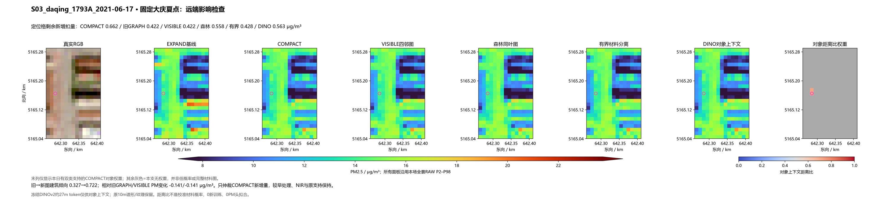
旧GRAPH剩余新增扣量 0.348 → DINO上下文 0.354 μg/m³；实际PM变化 -0.006。
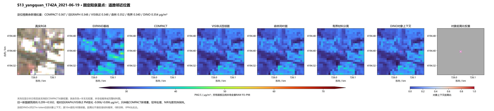
相对VISIBLE PM变化 -0.532608 μg/m³。空材料权重代表无支持沿用TENSOR，不能称DINO成功。
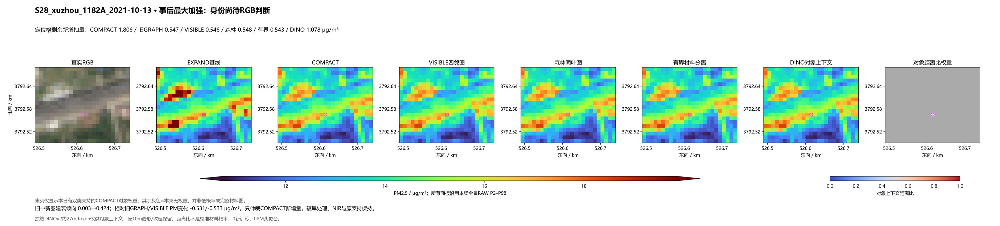
相对VISIBLE PM变化 -0.330096 μg/m³。空材料权重代表无支持沿用TENSOR，不能称DINO成功。
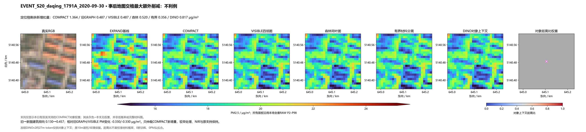
相对VISIBLE PM变化 +1.057458 μg/m³。空材料权重代表无支持沿用TENSOR，不能称DINO成功。
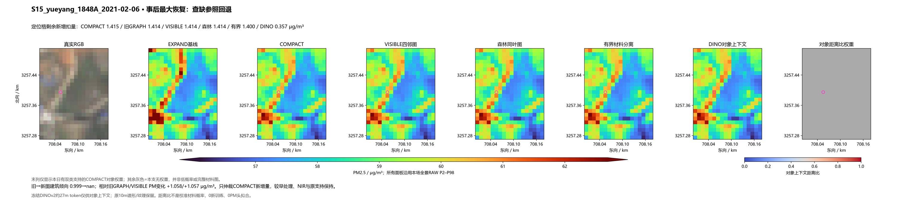
相对VISIBLE PM变化 -0.499205 μg/m³。空材料权重代表无支持沿用TENSOR，不能称DINO成功。
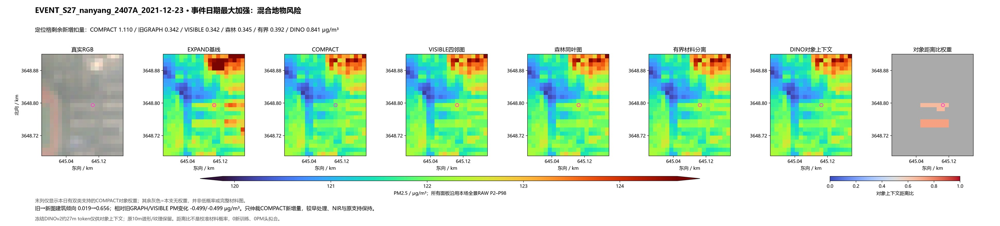
相对VISIBLE PM变化 +0.732802 μg/m³。空材料权重代表无支持沿用TENSOR，不能称DINO成功。
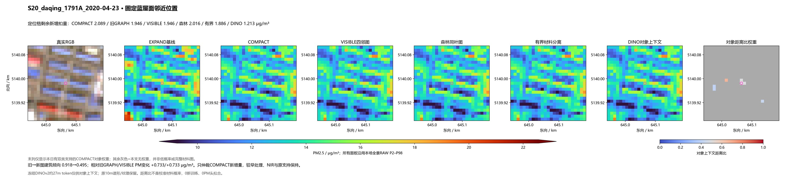
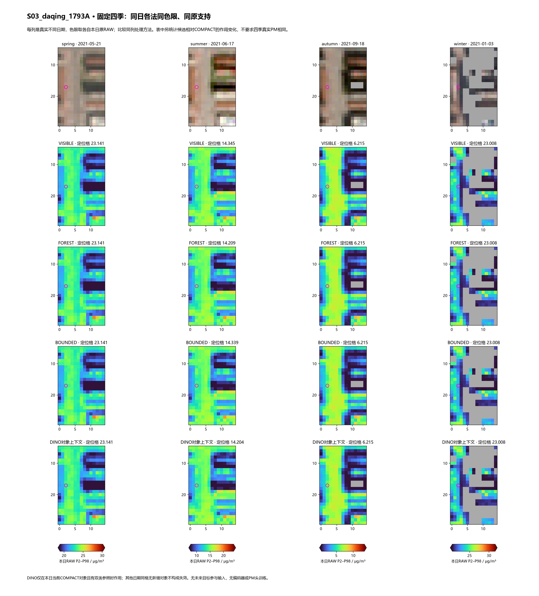
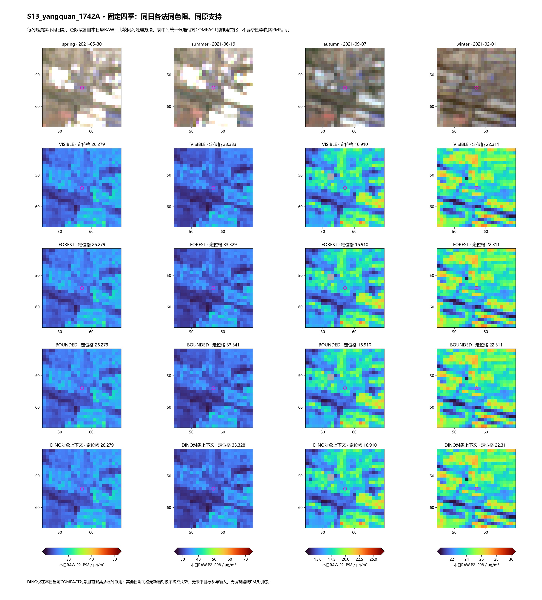
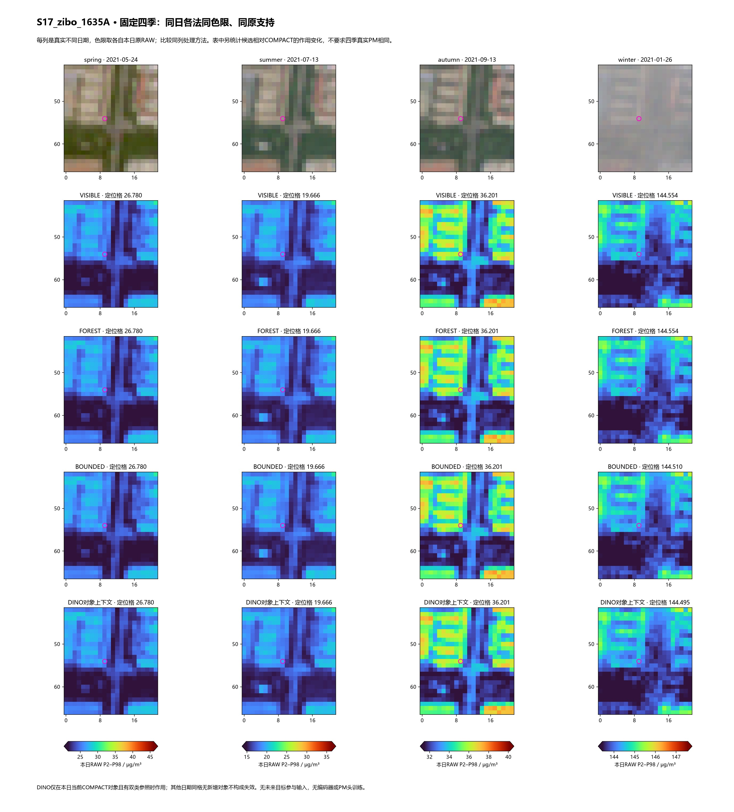